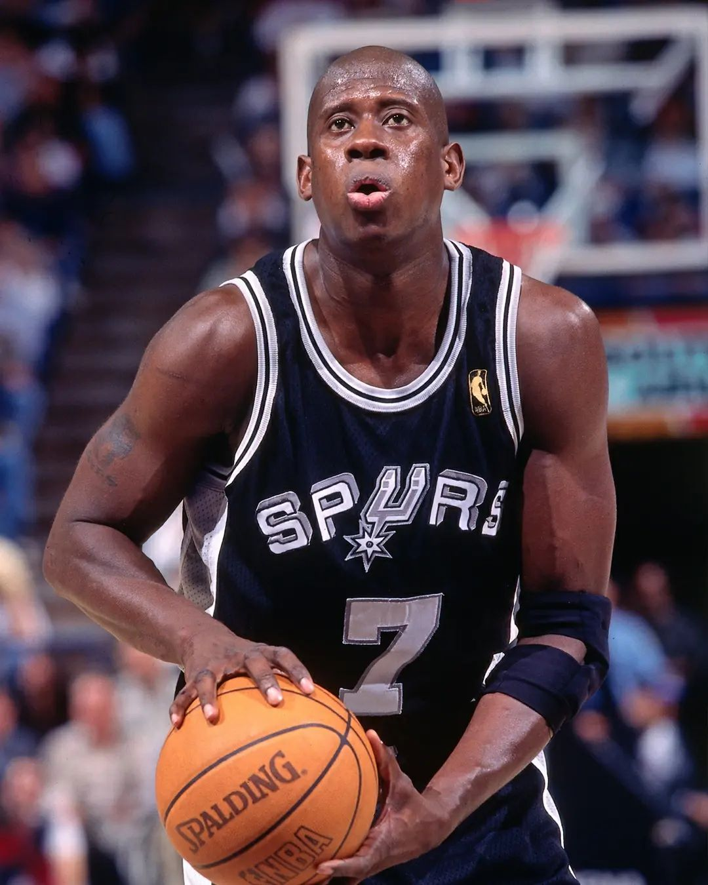
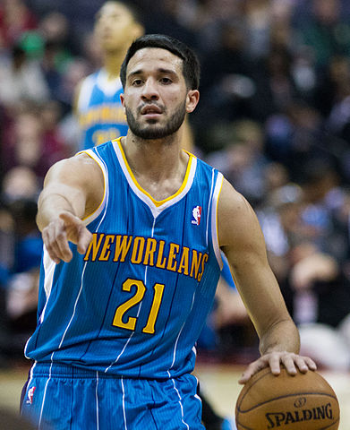
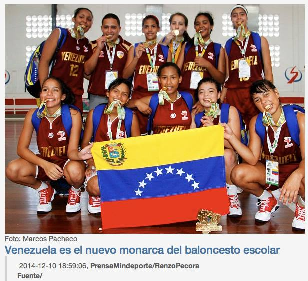
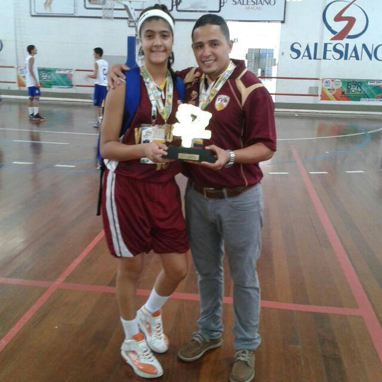

Jugadores Venezolanos en la NBA
CARL HERRERA
OSCAR TORRES

GREIVIS VASQUEZ
VENEZUELA CAMPEÓN SUDAMERICANO
JUGADORA MÁS VALIOSA BRASIL 2014
CAMPAMENTO GREIVIS VASQUEZ NBA
Noticias
NBA Draft 2024: dónde y a qué hora ver el evento de dos noches NBA Draft 2024: dónde y a qué hora ver el evento de dos noches Aquí está todo lo que debes saber del Draft de la NBA de dos noches comenzando el miércoles a las 8 p.m. ET, incluyendo orden de selecciones, prospectos y cómo ver la transmisión por la familia de canales de ESPN.
El pívot de los Celtics, Kristaps Porzingis
Porzingis tendrá una cirugía y se perderá los Juegos Olímpicos El pívot de los Celtics, Kristaps Porzingis, será operado por una rara lesión en la pierna izquierda. No hay una línea de tiempo para su recuperación, pero no jugará con Letonia en los Juegos de París.

WNBA: Wilson y Clark lideran votación anticipada de Juego de Estrellas
USA TEAM PARIS 2024

LIBROS LOS TENORES DE LA NBA